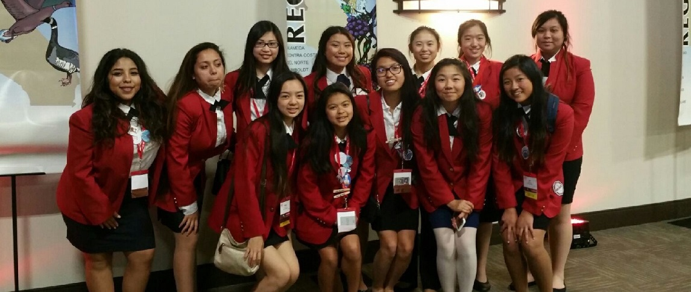

Career Clubs
The Film Society
Wanna watch films? Make a film? Well the Film Society does just that! We give students the oppurtunity to learn the ways of filmmaking. In each meeting, we watch up to 3 short films, learn a lesson taught by me and another student filmmaker, and plan upcoming screening or events. The club strives to make a short film each semester, host film screenings and a film festival, and help the school get a better perception about film than just the idea of moving pictures. Meetings TBD.
Presidents --- Orion Huang and Ryan Silber
MILLS DECA CLUB
DECA is a business club at Mills that explores a wide range of business related fields through guest speakers, discussions, field trips, and regional business competitions. Meet Fridays at lunch in room 136.
President --- Tiffany Yu
FCCLA
FCCLA is a national Career and Technical Student Run Organization that provides personal growth, leadership development, and career preparation. FCCLA offers many travel and volunteer opportunities all around America. It is always a fun way to interact with others and meet new people. Meet every other Wednesday in room 213.President --- Calla Yang